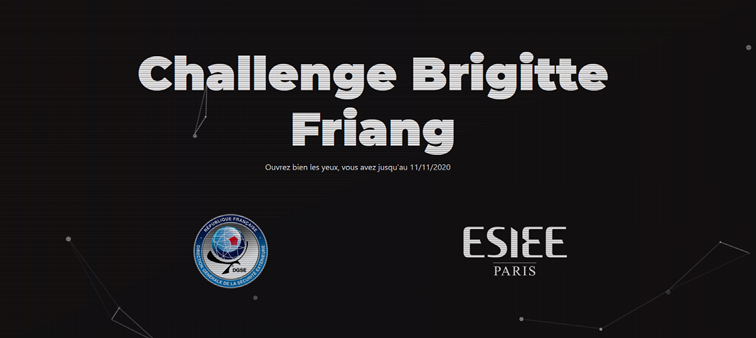
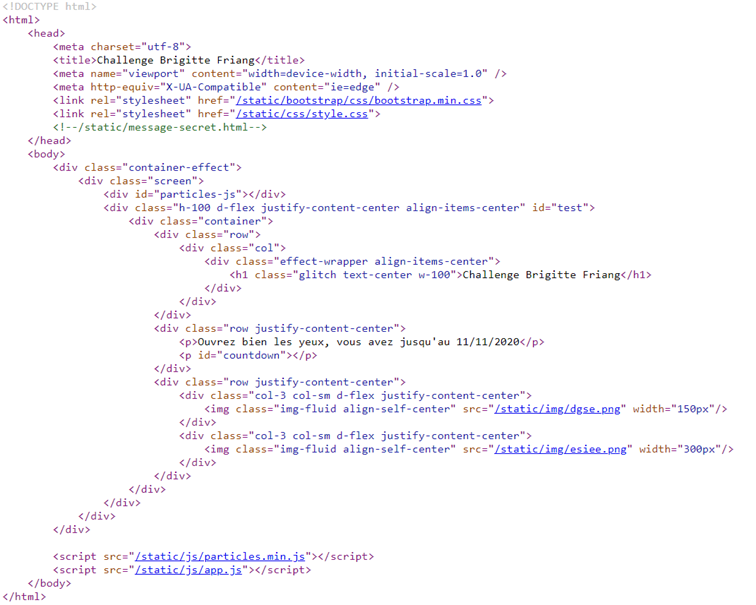
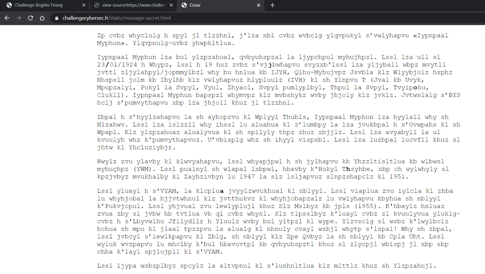
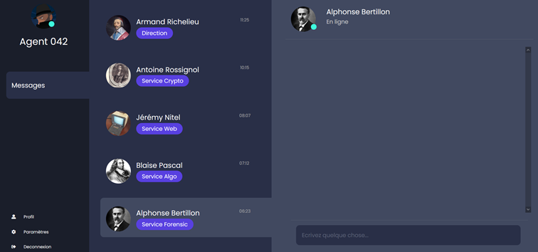

This challenge is made by french organizations and the challenge will be mainly in french. Some of the discoveries might be obvious for people understanding french.
Reaching the page, we are facing a page with 0 user interaction.

Let's analyze the source code of the webpage to see if we can get some information. Press F12 to open the Developer Tools or right click on the page and click on View Page Source

Looking at the source code, we see that the web page is using bootstrap, some .png files to display images, js files, and also a html file in comment ("/static/message-secret.html"). Let’s take a look at the path /static/message-secret.html and see what is the content of https://challengecybersec.fr/static/message-secret.html

We are facing an ecrypted message and if you look closely, some letters in the text are in bold “/joha”.
The page title is “Cesar”. Do we have a encryption method containing Cesar? Yes ! "Chiffrement de Cesar" which is Caesar cipher. Caesar cipher is a shift cipher, one of the simplest encryption methods.
I suspect that the message is in French, we have “sl 23/01/1924” (the date format is also in french format ;)) and “h 19 huz”, it is probably “le 23/01/1924” and “a 19 ans”. The number of shifts to go from “A” to “H” is 7. We might have the cipher key.
HIJKLMNOPQRSTUVWXYZABCDEFG
ABCDEFGHIJKLMNOPQRSTUVWXYZ
To decrypt it we can use any tool on internet such as https://www.dcode.fr/chiffre-cesar.
Decrypting the message does not give us a lot of information, it is about Brigitte Friang history. However, decrypting the 5 bolds characters gives us "/chat" as result. “/” can either be a path of a linux machine or it can also be the directory of an URL. We should check https://challengecybersec.fr/chat.

Reaching the /chat page, we are facing 5 people asking us to resolve the mystery behind some riddles. Only 2 out of 5 have been completed. Here are the write-ups for those challenges: